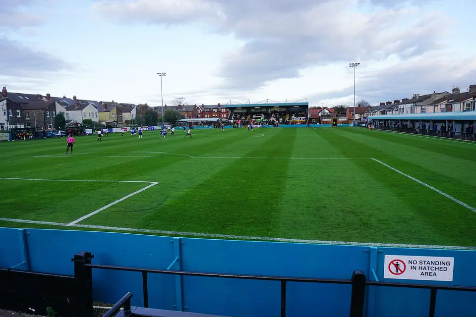
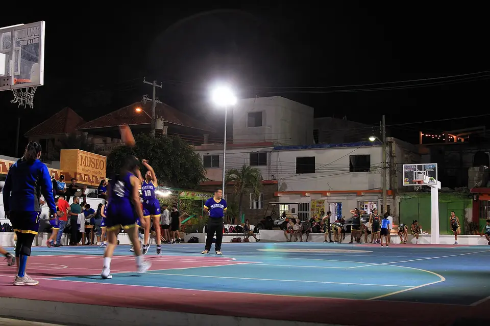
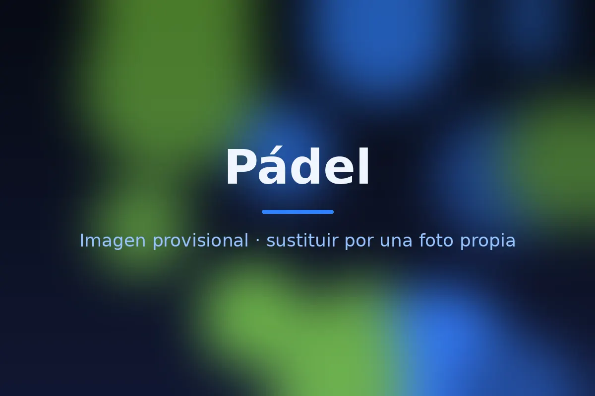

Fútbol
- Lo sigo
- Liga y Europa
El deporte rey. Me gusta seguir la liga, las competiciones europeas y las grandes citas de selecciones.
Me gustan todos los deportes: los sigo, los juego y, sobre todo, los entreno.
Si hay partido, lo veo. El fútbol y el baloncesto son los que más sigo, tanto en competiciones nacionales como europeas.

El deporte rey. Me gusta seguir la liga, las competiciones europeas y las grandes citas de selecciones.

Ritmo, táctica y remontadas imposibles. Un partido de baloncesto nunca está decidido hasta el final.

El plan perfecto para desconectar: competitivo, social y muy divertido. Siempre dispuesto a jugar un partido.
Mi rutina fija. Voy varias veces por semana: me ayuda a mantener la disciplina y a rendir mejor en todo lo demás.